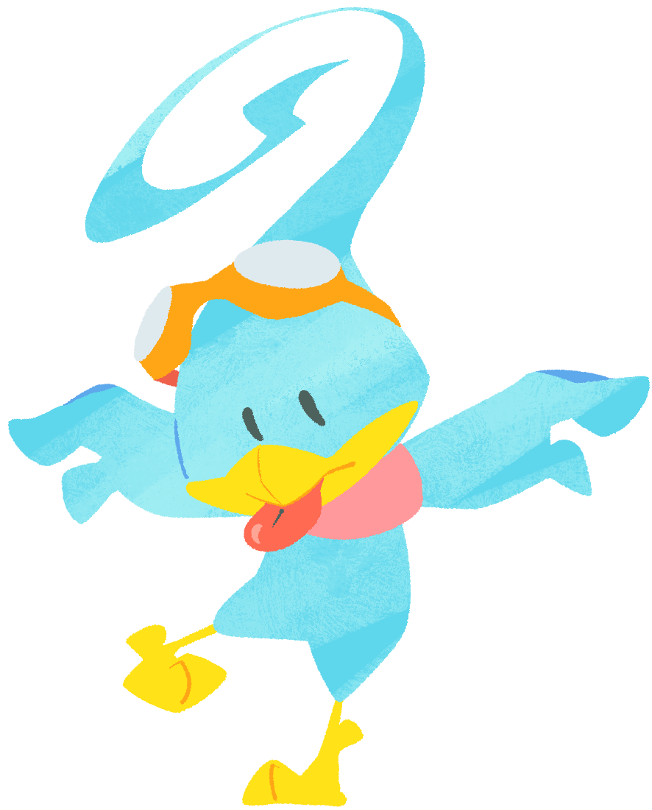

Kururin (Male)Kururin is the eldest and bravest son of his family. He is naive, but determined. He pilots the Helirin to rescue his siblings (and even Teacher Hare in Kururin Paradise, alongside his parents in Kururin Squash!) His mentor is his best friend Teacher Hare, who taught him how to fly the Helirin and how to navigate through courses. |
 |